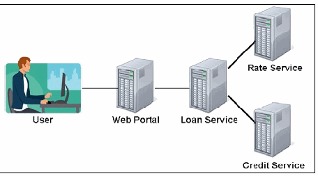
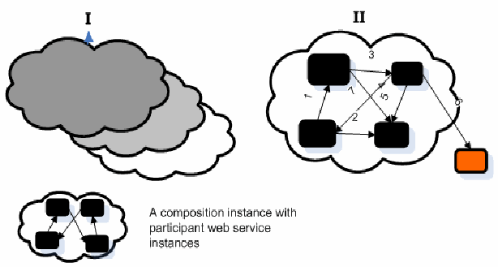

NIST IR 7559 日本語訳
英語タイトル : Forensics Web Services (FWS)日本語タイトル : フォレンジック Web サービス（FWS）
公開日 : 2010-06-30
原文URL : https://csrc.nist.gov/pubs/ir/7559/final
翻訳編集 : 自動生成（有志による非公式の日本語訳）, 原文取得日 : 2026-10-31, 訳文 : 135 / 136 ブロック
[要約] NIST IR 7559 は、合成された Web サービスの呼び出しを再現するための適切な証拠を保全するフォレンジック Web サービス（FWS）の設計を提案する報告書です。Web サービスの合成によってサービス間に相互依存関係が生まれ、悪用される可能性があるため、調査担当者は、悪用が報告された場合に攻撃を再現するために、合成されたサービスのログの集合をたどらなければなりません。FWS は、それ自体が Web サービスとして、オンラインのフォレンジック機能を他の Web サービスに提供し、信頼できる第三者として機能して、法廷で受け入れられる可能性を高めることを目指しています。本書は、Web サービスの背景、Web サービスに対する攻撃、Web サービスのフォレンジックにおける課題、FWS の概要、関連研究を取り上げています。
［NIST のロゴ。公的な標章のため、この非公式サイトには掲載していません。原本 PDF を参照してください。］
NIST Interagency Report 7559
NIST 機関間報告書 7559
Forensics Web Services (FWS)
フォレンジック Web サービス（FWS）
Anoop Singhal Murat Gunestas Duminda Wijesekera
Anoop Singhal Murat Gunestas Duminda Wijesekera
Forensics Web Services (FWS)
フォレンジック Web サービス（FWS）
NIST Interagency Report 7559
NIST 機関間報告書 7559
Anoop Singhal Murat Gunestas Duminda Wijesekera
Anoop Singhal Murat Gunestas Duminda Wijesekera
COMPUTER SECURITY
コンピュータセキュリティ
Computer Security Division Information Technology Laboratory National Institute of Standards and Technology Gaithersburg, MD 20899-8930
コンピュータセキュリティ部門 情報技術研究所 米国国立標準技術研究所 Gaithersburg, MD 20899-8930
June 2010
2010年6月
U.S. Department of Commerce
米国商務省
Gary Locke, Secretary
Gary Locke 長官
National Institute of Standards and Technology
米国国立標準技術研究所
Dr. Patrick D. Gallagher, Director
Dr. Patrick D. Gallagher 所長
Reports on Computer Systems Technology
コンピュータシステム技術に関する報告書
The Information Technology Laboratory (ITL) at the National Institute of Standards and Technology (NIST) promotes the U.S. economy and public welfare by providing technical leadership for the nation’s measurement and standards infrastructure. ITL develops tests, test methods, reference data, proof of concept implementations, and technical analysis to advance the development and productive use of information technology. ITL’s responsibilities include the development of technical, physical, administrative, and management standards and guidelines for the cost-effective security and privacy of sensitive unclassified information in Federal computer systems. This Interagency Report discusses ITL’s research, guidance, and outreach efforts in computer security and its collaborative activities with industry, government, and academic organizations.
米国国立標準技術研究所（NIST）の情報技術研究所（ITL）は、国の計測・標準インフラストラクチャに対する技術的なリーダーシップを提供することで、米国の経済と公共の福祉を促進しています。ITL は、情報技術の開発と生産的な利用を推進するため、テスト、テスト方法、参照データ、概念実証の実装、技術分析を開発しています。ITL の責務には、連邦コンピュータシステムにおける機微な非機密情報のセキュリティとプライバシーを費用対効果の高い形で確保するための、技術的、物理的、事務的、管理的な標準およびガイドラインの開発が含まれます。この機関間報告書では、コンピュータセキュリティに関する ITL の研究、ガイダンス、アウトリーチの取り組みと、産業界、政府、学術機関との協力活動について説明します。
National Institute of Standards and Technology Interagency Report 7559 17 pages (January 2010)
米国国立標準技術研究所 機関間報告書 7559 17 ページ（2010年1月）
Certain commercial entities, equipment, or materials may be identified in this document in order to describe an experimental procedure or concept adequately. Such identification is not intended to imply recommendation or endorsement by the National Institute of Standards and Technology, nor is it intended to imply that the entities, materials, or equipment are necessarily the best available for the purpose.
本文書では、実験の手順や概念を適切に説明するために、特定の商業組織、機器、または資材を明示している場合があります。このような明示は、米国国立標準技術研究所（NIST）による推奨や保証を意味するものではなく、それらの組織、資材、機器が当該目的に必ずしも最適であることを意味するものでもありません。
Acknowledgements
謝辞
The authors Anoop Singhal, Murat Gunestas and Duminda Wijesekera would like to thank their colleagues who reviewed drafts of this document and contributed to its development. A special note of thanks goes to Mark Carson, Rick Ayers, Rick Kuhn, Ramaswamy Chandramouli and Karen Scarforne of NIST for serving as reviewers for this document. The authors also acknowledge Elizabeth Lennon for her technical editing and administrative support.
著者の Anoop Singhal、Murat Gunestas、Duminda Wijesekera は、本文書の草案をレビューし、その作成に貢献してくれた同僚に感謝します。特に、NIST の Mark Carson、Rick Ayers、Rick Kuhn、Ramaswamy Chandramouli、Karen Scarforne には、本文書のレビュー担当者を務めていただいたことに深く感謝します。また、技術編集と事務面の支援を行った Elizabeth Lennon にも謝意を表します。
Abstract
概要
The advance of Web services technologies promises to have far-reaching effects on the Internet and enterprise networks. Web services based on the eXtensible Markup Language (XML), Simple Object Access Protocol (SOAP), and related open standards, and deployed in Service Oriented Architectures (SOA) allow data and applications to interact without human intervention through dynamic and ad hoc connections. Web services technology can be implemented in a wide variety of architectures, can co-exist with other technologies and software design approaches, and can be adopted in an evolutionary manner without requiring major transformations to legacy applications and databases.
Web サービス技術の進歩は、インターネットとエンタープライズネットワークに広範な影響を及ぼすと期待されています。eXtensible Markup Language（XML）、Simple Object Access Protocol（SOAP）、および関連するオープン標準に基づき、サービス指向アーキテクチャ（SOA）に展開される Web サービスは、動的かつアドホックな接続を通じて、人間の介在なしにデータとアプリケーションが相互作用することを可能にします。Web サービス技術は、さまざまなアーキテクチャで実装でき、他の技術やソフトウェア設計手法と共存でき、レガシーのアプリケーションやデータベースに大幅な変更を加えることなく、段階的に導入できます。
Web services are currently a preferred way to architect and provide complex services. This complexity arises due to the composition of new services and dynamically invoking existing services. These compositions create service inter-dependencies that can be misused for monetary or other gains. When a misuse is reported, investigators have to navigate through a collection of logs of the composed services to recreate the attack. In order to facilitate that task, in this document we propose the design and architecture of a forensic web services (FWS) that would securely maintain transactional records between other web services. These secure records can be re-linked to reproduce the transactional history by an independent agency. In this report we show the necessary components of a forensic framework for web services and its success through a case study.
Web サービスは現在、複雑なサービスを設計し提供するうえで好まれる方法です。この複雑さは、新しいサービスの合成と、既存のサービスの動的な呼び出しから生じます。こうした合成によってサービス間の相互依存関係が生まれ、金銭的な利益などを目的として悪用される可能性があります。悪用が報告された場合、調査担当者は、攻撃を再現するために、合成されたサービスのログの集合をたどらなければなりません。この作業を容易にするため、本文書では、他の Web サービス間のトランザクション記録を安全に保持するフォレンジック Web サービス（FWS）の設計とアーキテクチャを提案します。これらの安全な記録は、独立した機関によって再び関連付けられ、トランザクションの履歴を再現できます。本報告書では、Web サービスのフォレンジックフレームワークに必要な構成要素と、その有効性をケーススタディによって示します。
Table of Contents
目次
1. INTRODUCTION
1. はじめに
The advance of Web services technologies promises to have far-reaching effects on the Internet and enterprise networks. Web services based on the eXtensible Markup Language (XML), Simple Object Access Protocol (SOAP), and related open standards, and deployed in Service Oriented Architectures (SOA) allow data and applications to interact without human intervention through dynamic and ad hoc connections. Web services technology can be implemented in a wide variety of architectures, can co-exist with other technologies and software design approaches, and can be adopted in an evolutionary manner without requiring major transformations to legacy applications and databases.
Web サービス技術の進歩は、インターネットとエンタープライズネットワークに広範な影響を及ぼすと期待されています。eXtensible Markup Language（XML）、Simple Object Access Protocol（SOAP）、および関連するオープン標準に基づき、サービス指向アーキテクチャ（SOA）に展開される Web サービスは、動的かつアドホックな接続を通じて、人間の介在なしにデータとアプリケーションが相互作用することを可能にします。Web サービス技術は、さまざまなアーキテクチャで実装でき、他の技術やソフトウェア設計手法と共存でき、レガシーのアプリケーションやデータベースに大幅な変更を加えることなく、段階的に導入できます。
The security challenges presented by the Web services approach are formidable. Many of the features that make Web services attractive, including greater accessibility of data, dynamic application-to-application connections, and relative autonomy (lack of human intervention) are at odds with traditional security models and controls. The following are some of the challenges for secure web services:
Web サービスのアプローチがもたらすセキュリティ上の課題は非常に大きいです。データのアクセス性の向上、アプリケーション間の動的な接続、相対的な自律性（人間の介在がないこと）など、Web サービスを魅力的にしている機能の多くは、従来のセキュリティモデルや管理策と相容れません。安全な Web サービスに向けた課題には、次のようなものがあります。
•Confidentiality and integrity of data that is transmitted via Web services protocols in service-to-service transactions, including data that traverses intermediary (pass-through) services.
•サービス間のトランザクションにおいて Web サービスのプロトコルを介して送信されるデータ（中継（パススルー）サービスを通過するデータを含む）の機密性と完全性。
•Functional integrity of the Web services that requires both establishment in advance of the trustworthiness of services in orchestrations or choreographies.
•オーケストレーションまたはコレオグラフィにおけるサービスの信頼性を事前に確立する必要がある、Web サービスの機能的完全性。
•Availability in the face of denial of service attacks that exploit vulnerabilities unique to Web service technologies, especially targeting core services, such as discovery service, on which other services rely.
•Web サービス技術に固有の脆弱性を悪用するサービス拒否攻撃、特に、他のサービスが依存する発見サービスなどの中核となるサービスを標的とする攻撃に直面した場合の可用性。
The SOA processing model requires the ability to secure SOAP messages and XML documents as they are forwarded along potentially long and complex chains of consumer, provider, and intermediary services. The nature of Web services processing makes those services subject to unique attacks, as well as variations on familiar attacks targeting Web servers.
SOA の処理モデルでは、コンシューマー、プロバイダー、仲介サービスから成る、潜在的に長く複雑な連鎖に沿って転送される SOAP メッセージや XML 文書を保護できることが求められます。Web サービス処理の性質上、これらのサービスは、Web サーバーを標的とするよく知られた攻撃の変種だけでなく、固有の攻撃も受けやすくなっています。
In web services, the service-level compositional techniques create complex inter-dependencies between services belonging to different organizations that can be exploited due to some localized or compositional flaws. Therefore such exploits/attacks [1-3] can affect multiple servers and organizations, resulting in financial loss or infrastructural damage. Investigating such incidents requires that dependencies between service invocations be retained in a participating party neutral and secure way. Material evidence currently extractable from web servers such as log records, firewall alerts from end point services, and the like, do not have forensic value because defendants can claim that they did not send that message. In this report, we describe a participant neutral solution for a forensically valid evidence gathering mechanism for web services.
Web サービスでは、サービスレベルの合成手法により、異なる組織に属するサービス間に複雑な相互依存関係が生じ、局所的な欠陥や合成に起因する欠陥によって悪用される可能性があります。このため、こうした悪用や攻撃 [1-3] は、複数のサーバーや組織に影響を及ぼし、金銭的損失やインフラストラクチャへの損害をもたらす可能性があります。このようなインシデントを調査するには、サービス呼び出し間の依存関係を、関与する当事者に中立で安全な方法で保持しておく必要があります。現在 Web サーバーから抽出できる物的証拠、たとえばログレコードやエンドポイントサービスからのファイアウォールのアラートなどには、被告が当該メッセージを送信していないと主張できるため、フォレンジック上の価値がありません。本報告書では、Web サービスにおいてフォレンジック上有効な証拠を収集する仕組みについて、参加者に中立な解決策を説明します。
2. BACKGROUND ON WEB SERVICES
2. Web サービスの背景
Two conceptual elements underlie current web services: (1) Use of XML (eXtensible Markup Language), SOAP (Simple Object Access Protocol), and WSDL (Web Service Definition Language) as basic building material; (2) Complex applications built upon long-running transactions that are composed of other web services.
現在の Web サービスの基盤には、2 つの概念的な要素があります。(1) 基本的な構成要素としての XML（eXtensible Markup Language）、SOAP（Simple Object Access Protocol）、WSDL（Web Service Definition Language）の使用、(2) 他の Web サービスから構成される長時間実行トランザクションの上に構築される複雑なアプリケーション。
2.1 Basic Appearance of Web Services
2.1 Web サービスの基本的な姿
XML format underlies the entire web service architecture and its artifacts. All schemas, definition files, messages transmitted are formed by the means of XML. WSDL, a XML based definition file, defines the interface of a web service in order for the service to be invoked by other services in accordance with the specifications of internal executions. SOAP, a XML based protocol, defines the metadata of the messages to be exchanged between services. WSDL documents define operations; and they are the only mechanisms in order for web services to communicate with each other. Web services use SOAP messages by exchanging them as incoming and outgoing messages through the operations.
XML 形式は、Web サービスアーキテクチャ全体とその成果物の基盤となっています。すべてのスキーマ、定義ファイル、送信されるメッセージは XML を用いて形成されます。XML ベースの定義ファイルである WSDL は、内部実行の仕様に従って他のサービスがそのサービスを呼び出せるよう、Web サービスのインターフェースを定義します。XML ベースのプロトコルである SOAP は、サービス間で交換されるメッセージのメタデータを定義します。WSDL 文書は操作を定義し、操作は Web サービスが相互に通信するための唯一の仕組みです。Web サービスは、操作を通じて SOAP メッセージを受信メッセージおよび送信メッセージとして交換することで、SOAP メッセージを使用します。
2.2 Composition of Web Services
2.2 Web サービスの合成
The message exchange patterns (MEP) described above constitute the entire web service paradigm. These simple MEPs construct collaboration scenarios using the appropriate composition models. While defining a composition, two issues come up: how it is designed and what pattern it employs.
上で説明したメッセージ交換パターン（MEP）が、Web サービスのパラダイム全体を構成しています。これらの単純な MEP は、適切な合成モデルを用いて連携のシナリオを構築します。合成を定義する際には、どのように設計するか、どのようなパターンを採用するかという 2 つの問題が生じます。
2.3 Static vs. Dynamic Composition
2.3 静的な合成と動的な合成
One consumer service could select the target provider service either statically or dynamically, that is, at design-time or run-time. Design-time selections entail a-priori determination while run-time selections can introduce the opportunity to switch between web services dynamically. Static web service composition introduces less anonymity than the dynamic counterpart, therefore it requires less effort for a forensic examination.
1 つのコンシューマーサービスは、対象となるプロバイダーサービスを、静的に、または動的に、すなわち設計時または実行時に選択できます。設計時の選択は事前の決定を伴いますが、実行時の選択は Web サービスを動的に切り替える機会をもたらす可能性があります。静的な Web サービスの合成は、動的な合成と比べて匿名性が低いため、フォレンジック調査に必要な労力が少なくて済みます。
2.4 Hierarchical vs. Conversational Composition
2.4 階層型の合成と会話型の合成
According to Khalaf [4], one could compose web services either in a hierarchical or in a conversational pattern. Through Hierarchical Composition, a consumer web service calls another composite web service passing the input parameter and receiving the result. Other than this request-response activity, no other call is employed to the same instance at the target. Designers, however, mostly use Conversational Composition when web services need to interact with each other more than once throughout the same instances at both sides. In these scenarios, the target system, unavoidably, makes its internal state mutable, thus causing overlapping instances to be created within parties to the composition.
Khalaf [4] によれば、Web サービスは階層型または会話型のパターンで合成できます。階層型の合成では、コンシューマー Web サービスが入力パラメーターを渡して別の合成 Web サービスを呼び出し、結果を受け取ります。この要求と応答のやり取り以外には、対象側の同一インスタンスに対する呼び出しは行われません。一方、設計者は、双方の同一インスタンス間で Web サービスが複数回やり取りする必要がある場合、会話型の合成を多く使用します。こうしたシナリオでは、対象システムは必然的に内部状態を可変にし、その結果、合成に関与する当事者の間に重複するインスタンスが作成されます。
In a hierarchical pattern, the instance of an external web service completely finishes before returning the result while many interactions between instances can survive in conversational pattern. Although describing what exactly happened during execution in a hierarchical pattern is reasonable, this might not be the case in conversational pattern. Thus, from a forensics point of view, representing and recreating the activities in the latter pattern is much more difficult than the former one.
階層型のパターンでは、外部の Web サービスのインスタンスは結果を返す前に完全に終了しますが、会話型のパターンでは、インスタンス間の多くのやり取りが存続する可能性があります。階層型のパターンでは、実行中に何が起きたかを正確に記述することは合理的ですが、会話型のパターンではそうとは限りません。したがって、フォレンジックの観点では、後者のパターンの活動を表現し再現することは、前者よりもはるかに困難です。
2.5 Composition Standards and Languages
2.5 合成の標準と言語
Although there are many standards and specifications for web services, we mention state-of-the-art orchestration and choreography specifications here. BPEL (Business Process Execution Language) is a language for business process modeling. WS-BPEL and BPEL4WS are their two popular implementations for web service architecture. They can define both abstract and executable processes. They are two effective tools to realize orchestration of composite web services from a central point. Conversely, WSCI and WS-CDL create a global view of multi-party choreographies of web services from their individual description files. These languages enable collaborative processes that are recruiting multiple web services, and facilitate interactions between them from a global, high-level perspective rather than an individual service’s request response perspective.
Web サービスには多くの標準や仕様がありますが、ここでは最新のオーケストレーションおよびコレオグラフィ仕様を取り上げます。BPEL（Business Process Execution Language）は、ビジネスプロセスをモデル化するための言語です。WS-BPEL と BPEL4WS は、Web サービスアーキテクチャにおける代表的な 2 つの実装です。これらは、抽象プロセスと実行可能プロセスの両方を定義できます。これらは、合成 Web サービスのオーケストレーションを中心点から実現する有効なツールです。これに対し、WSCI と WS-CDL は、個々の記述ファイルから、Web サービスの複数当事者間のコレオグラフィの全体像を作成します。これらの言語は、複数の Web サービスを組み込んだ協調プロセスを可能にし、個々のサービスの要求・応答の観点ではなく、全体的で高い抽象度の観点からサービス間のやり取りを促進します。
2.6 Web Services Example
2.6 Web サービスの例
Before examining forensics for Web services in detail, it is helpful to first consider an example of Web services that can be used as a model to understand Web services security. Figure 1 shows a simplified representation of major Web services components for a consumer loan service.
Web サービスのフォレンジックを詳しく調べる前に、まず、Web サービスのセキュリティを理解するためのモデルとして使用できる Web サービスの例を検討すると役立ちます。図 1 は、消費者ローンサービスにおける主要な Web サービスの構成要素を簡略化して示したものです。

枠の中の構成図です。机に向かう人物のイラスト（「User」）が線で「Web Portal」のサーバーにつながり、それが「Loan Service」のサーバーにつながっています。Loan Service のサーバーからは、右上の「Rate Service」と右下の「Credit Service」の 2 台のサーバーへ線が出ています。
Figure 1: Consumer Loan Service Example
図 1: 消費者ローンサービスの例
In this example, users (consumers) contact a Web portal that offers financial services. When a user requests loan information, the Web portal contacts a loan Web service on behalf of the user. The loan service then contacts other Web services as needed, such as rate and credit services, to get up-to-date information, and passes the requested information back to the user through the Web portal. Each host that needs to use a Web service uses the Universal Description, Discovery, and Integration (UDDI) protocol to locate a suitable Web service and invoke it.
この例では、ユーザー（コンシューマー）は、金融サービスを提供する Web ポータルにアクセスします。ユーザーがローン情報を要求すると、Web ポータルはユーザーに代わってローン Web サービスにアクセスします。次にローンサービスは、最新の情報を得るために、金利サービスや信用サービスなど、必要に応じて他の Web サービスにアクセスし、要求された情報を Web ポータルを通じてユーザーに返します。Web サービスを利用する必要のある各ホストは、Universal Description, Discovery, and Integration（UDDI）プロトコルを使用して、適切な Web サービスを探し出し、呼び出します。
There are several major security objectives for this scenario. One is validating the identity of the user requesting the loan information. Another is restricting the use of Web services; for example, the credit service might charge a transaction fee for each request, so the credit service would need assurance of the identity of the service requesting the information. Other security objectives involve ensuring that only authorized users and Web services are able to access, modify, and/or delete the necessary information.
このシナリオには、いくつかの主要なセキュリティ目的があります。1 つは、ローン情報を要求しているユーザーの身元を検証することです。もう 1 つは、Web サービスの使用を制限することです。たとえば、信用サービスが要求ごとに取引手数料を課す場合、信用サービスは、情報を要求しているサービスの身元を確かなものとして確認する必要があります。その他のセキュリティ目的には、認可されたユーザーと Web サービスのみが、必要な情報にアクセスし、変更し、または削除できるようにすることが含まれます。
3. WEB SERVICE ATTACKS
3. Web サービスへの攻撃
There are many attacks on web services, such as WSDL/UDDI scanning, parameter tampering, replays, XML rewriting, man-in-the-middle, eavesdropping, routing detours [1-3] etc. In addition to web service attacks classified in [1], dynamic service selection, choreography, orchestration, and composition increase the ways of exploiting web services, such as application and dataflow attacks [3].
Web サービスに対する攻撃には、WSDL/UDDI スキャン、パラメーター改ざん、リプレイ、XML 書き換え、中間者攻撃、盗聴、ルーティングの迂回など [1-3] 多数があります。[1] で分類されている Web サービス攻撃に加えて、動的なサービス選択、コレオグラフィ、オーケストレーション、合成によって、アプリケーション攻撃やデータフロー攻撃 [3] など、Web サービスを悪用する方法が増えます。
We now show the details of a sample cross-site scripting (CSS) attack used to illustrate the capabilities of FWS. A typical CSS attack may inject a malicious script to harm a web service that dynamically builds some of its information. Figure 2 shows an attacker with stolen credentials injecting some malicious data invoking an update operation on a Weather service that stores this script (including instructions to steal cookies) from web browsers. Then a web application, say Portal Web Application, invoking a GET operation retrieves this malicious data and publishes the weather information to its subscribers in an html form, thereby making the subscribers send their personal information stored in cookies to the attacker’s Fishing Net Application. Then, a Fishing Net Application managed by the Attacker can obtain sensitive user information as shown in Figure 2.
ここでは、FWS の機能を説明するために用いるクロスサイトスクリプティング（CSS）攻撃の例の詳細を示します。典型的な CSS 攻撃では、情報の一部を動的に構築する Web サービスに被害を与えるため、悪意のあるスクリプトを注入する場合があります。図 2 は、盗まれた認証情報を持つ攻撃者が、天気サービスの更新操作を呼び出して悪意のあるデータを注入し、そのデータに Web ブラウザーからクッキーを盗む命令を含むスクリプトを保存させる様子を示しています。次に、たとえば Portal Web Application などの Web アプリケーションが GET 操作を呼び出してこの悪意のあるデータを取得し、天気情報を HTML 形式で購読者に公開します。その結果、購読者はクッキーに保存された個人情報を攻撃者の Fishing Net Application に送信することになります。図 2 に示すように、攻撃者が管理する Fishing Net Application は、機微なユーザー情報を入手できます。
![Attack diagram. A gray box "Portal Web Service (End Point for CSS)" sits on a server labeled "Portal Web Application (Victim)". Black lines labeled "HTML content with mal scripts" go from this server to three computers labeled "Target Client". Red lines labeled "Personal info (e.g. cookies)" go from each Target Client to a server labeled "Fishing Net Application", which connects to a stick figure "Attacker". The Attacker points to an oval "MET_WEBAPP" at a gray box "Meteorology Web Service (Actual Start Point for CSS)". An arrow labeled "Web Service Messaging" goes from Meteorology Web Service up to a gray box "Weather Web Service (Stepping Stone)", annotated: "- One-Way message - Identity of sender (Met. WS) and receiver (Wea.WS..updateOp) - Content of mal script (e.g. including the address of Fishing Net App.) - Timestamp". Another "Web Service Messaging" arrow goes between Weather Web Service and Portal Web Service, annotated: "- Two-Way message - Identity of sender (WS-Client of Portal Web App) and receiver (Wea.WS. .getOp) - Content of mal script (e.g. including the address of Fishing Net App.) - Timestamp".](assets/ir-7559/p0013-figure-01.png)
攻撃の構成図です。灰色の箱「Portal Web Service (End Point for CSS)」が「Portal Web Application (Victim)」のサーバーの上にあります。このサーバーから、「HTML content with mal scripts」と書かれた黒い線が「Target Client」の 3 台のコンピューターへ伸びています。各 Target Client からは「Personal info (e.g. cookies)」と書かれた赤い線が「Fishing Net Application」のサーバーへ伸び、そのサーバーは棒人間の「Attacker」につながっています。Attacker は楕円「MET_WEBAPP」を介して灰色の箱「Meteorology Web Service (Actual Start Point for CSS)」を指しています。Meteorology Web Service から灰色の箱「Weather Web Service (Stepping Stone)」へ「Web Service Messaging」の矢印があり、注記は「- One-Way message - Identity of sender (Met. WS) and receiver (Wea.WS..updateOp) - Content of mal script (e.g. including the address of Fishing Net App.) - Timestamp」です。Weather Web Service と Portal Web Service の間にも「Web Service Messaging」の矢印があり、注記は「- Two-Way message - Identity of sender (WS-Client of Portal Web App) and receiver (Wea.WS. .getOp) - Content of mal script (e.g. including the address of Fishing Net App.) - Timestamp」です。
Figure 2. A Cross-Site Scripting Attack Using Web Services. Meteorolgy Web Service (MET_WS) gets infected with malicious data and delivers the data ignorantly to the Weather Web Service (WEA_WS) when requested. WEA_WS, accordingly to their choreography, passes malicious data to Portal Web Service (POR_WS) among other legal information. An attacker, aware of choreography among web services, exploits this model and has Portal Web Application delivered malicious data to its members using web services in this choreography model.
図 2. Web サービスを用いたクロスサイトスクリプティング攻撃。気象 Web サービス（MET_WS）は悪意のあるデータに感染し、要求を受けると、感染を知らないままそのデータを天気 Web サービス（WEA_WS）に配信します。WEA_WS はコレオグラフィに従い、他の正当な情報とともに悪意のあるデータをポータル Web サービス（POR_WS）に渡します。Web サービス間のコレオグラフィを知る攻撃者は、このモデルを悪用し、このコレオグラフィモデルの Web サービスを使って、ポータル Web アプリケーションに悪意のあるデータをそのメンバーへ配信させます。
The stated CSS attack shows how the business logic of a web service can be used to attack a server that depends upon other web services. In this scenario, Portal Web Service can claim that Weather Web Service sent the malicious content, whereas the actual source was Meteorology Web Service. This illustrates the need to have a mechanism that irrefutably points to the source of malice.
上記の CSS 攻撃は、Web サービスのビジネスロジックが、他の Web サービスに依存するサーバーを攻撃するためにどのように使用され得るかを示しています。このシナリオでは、ポータル Web サービスは、悪意のあるコンテンツを送信したのは天気 Web サービスであると主張できますが、実際の発信元は気象 Web サービスでした。これは、悪意の発信元を反論の余地なく示す仕組みが必要であることを示しています。
4. CHALLENGES IN FORENSICS OF WEB SERVICES
4. Web サービスのフォレンジックにおける課題
As opposed to traditional forensics implementations, applying forensics to web service infrastructures introduces novel problems such as a need for neutrality and comprehensiveness. The primary purpose of digital forensics is to present digital evidence in legal proceedings. Therefore, the techniques used to extract digital evidence from devices must comply with legal standards. Reliability is another important issue for forensic examinations.
従来のフォレンジックの実装とは異なり、Web サービスのインフラストラクチャにフォレンジックを適用すると、中立性や網羅性の必要性といった新たな問題が生じます。デジタルフォレンジックの主な目的は、法的手続においてデジタル証拠を提示することです。したがって、デバイスからデジタル証拠を抽出するために用いる技法は、法的基準に準拠しなければなりません。信頼性も、フォレンジック調査におけるもう 1 つの重要な問題です。
a) Neutrality
a) 中立性
Web services, owned by organizations, have equal rights in the court of law when any dispute arises between parties. Any log records residing at only one party’s site would have no forensic value under these circumstances since any alteration on the records might have been employed in favor of that site. Many forensic investigations on traditional systems have been based on one site’s records. For traditional systems that may be reasonable since investigators take advantage of inquiring users and human factors to corroborate evidence. In service oriented architectures, both sites should be automated to collect and retain their own records. Records at both the sites would be under question by the opponent party, thus showing the need to have a neutral party capturing and preserving evidence based on interactions between parties.
組織が所有する Web サービスは、当事者間で紛争が生じた場合、法廷において対等な権利を持ちます。このような状況では、一方の当事者のサイトにのみ存在するログレコードは、記録の改変がそのサイトに有利になるように行われた可能性があるため、フォレンジック上の価値を持ちません。従来のシステムに対する多くのフォレンジック調査は、一方のサイトの記録に基づいて行われてきました。従来のシステムでは、調査担当者がユーザーへの聞き取りや人的要因を活用して証拠を裏付けるため、それが妥当な場合があります。サービス指向アーキテクチャでは、双方のサイトが自動で自らの記録を収集し保持する必要があります。双方のサイトの記録は、相手方の当事者から疑義を呈されることになるため、当事者間のやり取りに基づく証拠を、中立的な第三者が取得し保全する必要があることがわかります。
b) Comprehensiveness
b) 網羅性
As described earlier web service compositions may span over many web services of many organizations. Such interdependent services create long information flows. Thus malicious data may stream over many web services. From a forensics point of view, the evidence gathered should be comprehensive enough so that investigation can reach all related end points to reveal what party performed what action. Incomplete evidence might point to any web service node as the source of malicious activity, thus misleading the investigators through the examination.
前述のとおり、Web サービスの合成は、多くの組織の多くの Web サービスにまたがる場合があります。このような相互依存するサービスは、長い情報の流れを生み出します。したがって、悪意のあるデータが多くの Web サービスを流れる可能性があります。フォレンジックの観点では、収集する証拠は、調査によってすべての関連するエンドポイントに到達し、どの当事者がどの行為を行ったかを明らかにできるだけの網羅性を備えている必要があります。不完全な証拠では、悪意のある活動の発信元としてどの Web サービスノードも示してしまう可能性があり、調査を通じて調査担当者を誤った方向に導くことになります。
c) Reliability
c) 信頼性
Yet another important principle that any evidence should have is reliability. In the court of law, digital evidence must be presented in an articulate manner. Because impersonation and replay attacks do occur in web services, cryptographic mechanisms would help to protect ownership of information passed around in messages by signing them digitally. Such a requirement, of course, would entail web services using a cryptography platform such as Public Key Infrastructure (PKI).
あらゆる証拠が備えるべきもう 1 つの重要な原則は、信頼性です。法廷では、デジタル証拠は明瞭な形で提示されなければなりません。Web サービスでは、なりすましやリプレイ攻撃が実際に発生するため、暗号メカニズムは、メッセージにデジタル署名を付けることで、メッセージで受け渡される情報の所有権を保護するのに役立ちます。もちろん、このような要件を満たすには、Web サービスが公開鍵基盤（PKI）などの暗号プラットフォームを使用する必要があります。
5. OVERVIEW of FWS
5. FWS の概要
In order to facilitate and base forensic investigations on reliable data, we propose designing Forensic Web Services (FWS) that preserve appropriate evidence to recreate the composed web service invocations. This would have a greater chance of being accepted in a court of law. FWS will provide on-line forensic capabilities to other web services as a web service itself. To utilize them, FWS would be integrated with web services that require their services – refered to as customer web services of FWS. In order to do so, FWS provides a centralized service access point to its customer web services. This information retained by FWS acting as a trusted third party can be directly given to forensic examiners. Previous proposals to monitor web services [5] and generating evidence [6-8] have been for business purposes. The evidence they produce does not meet the requirement for forensic examinations.
信頼できるデータに基づいてフォレンジック調査を行いやすくするため、合成された Web サービス呼び出しを再現するための適切な証拠を保全するフォレンジック Web サービス（FWS）の設計を提案します。これにより、法廷で受け入れられる可能性が高まります。FWS は、それ自体が Web サービスとして、オンラインのフォレンジック機能を他の Web サービスに提供します。これを利用するには、FWS を、そのサービスを必要とする Web サービス（FWS の顧客 Web サービスと呼びます）に統合します。そのために、FWS は顧客 Web サービスに対して一元化されたサービスアクセスポイントを提供します。信頼できる第三者として機能する FWS が保持するこの情報は、フォレンジック調査担当者に直接提供できます。Web サービスを監視するこれまでの提案 [5] や、証拠を生成する提案 [6-8] は、ビジネス目的のものでした。それらが生成する証拠は、フォレンジック調査の要件を満たしていません。
The Forensic Web Service Framework provides two essential services:
フォレンジック Web サービスフレームワークは、2 つの不可欠なサービスを提供します。
1.Pair-wise evidence generation: Collect transactional evidence that occur between pairs of services at service invocation times. Figure 3 illustrates this process, called “deliver”.
1.ペア単位の証拠生成: サービスの呼び出し時に、サービスのペアの間で発生するトランザクションの証拠を収集します。図 3 は、「deliver」と呼ばれるこのプロセスを示しています。
2.Comprehensive evidence generation: On demand, compose pairs of transactional evidence collected at service invocation times and reveal global views of complex transactional scenarios that occurred during specified periods, and provide them for forensic examiners. Figure 3 illustrates the ‘collectDependents’ algorithm (the core component of this process), that is inspired by King’s and Chen’s dependency graph algorithm [9].
2.包括的な証拠生成: 要求に応じて、サービスの呼び出し時に収集されたトランザクション証拠のペアを合成し、指定された期間に発生した複雑なトランザクションシナリオの全体像を明らかにして、フォレンジック調査担当者に提供します。図 3 は、King と Chen の依存関係グラフアルゴリズム [9] に着想を得た、「collectDependents」アルゴリズム（このプロセスの中核となる構成要素）を示しています。
![Two panels. Left, titled "Pair Wise Evidence Generation": a sequence diagram with lifelines "Sender WS", "Forensic WS" and "Receiver WS". A dotted "Request" arrow goes from Sender WS to Forensic WS at time "t1" and on to Receiver WS; Forensic WS records "LRI(Request)". A dotted "Response" arrow comes back from Receiver WS to Forensic WS at "t2"; an "Ack" arrow goes on to Receiver WS and "LRI(Response)+LRI(Ack)" goes back to Sender WS. Right, titled "Comprehensive Evidence Generation": a boxed algorithm: "←!– Starts extracting values (timeThreshold, nodeThreshold, etc.) → ←!– from DependentsBagIn and initializes creating the → ←!– WebServiceNodes and LogRecordEdges instances of GRAPH → 1. baseTime = startTime - timeThreshold 2. for each logRecordIndex LRI in FWS { 3. timeThreshold=timeTreshold - (startTime - LRI.timeStamp) 4. startTime=LRI.timestamp 5. for each webServiceNode WS in GRAPH { 6. if (SenderWS | ReceiverWS ∈ LRI & LRI ∈ GRAPH& R.timestamp ≥ baseTime & WS.nodeLevel ≤ WS.nodeThreshold) { 7. Add LRI as edge into GRAPH 8. if (LRI's partner web service PWS ∈ GRAPH) { 9. PWS.nodeLevel=WS.nodeLevel+1 10. PWS.nodeThreshold=nodeThreshold 11. Add the PWS into GRAPH } 12. if (LRI's PWS ∈ this.FWS & LRI's PWS ∈ GRAPH) { 13. NeighbourFWS = getFWS(PWS) 14. NeighbourFWS.collectDependents(DependentsBagIn) 15. Merge DependentsBagOut into GRAPH}}}} 16. return GRAPH in DependentsBagOut format".](assets/ir-7559/p0016-figure-01.png)
2 つの部分からなる図です。左は「Pair Wise Evidence Generation」と題したシーケンス図で、ライフラインは「Sender WS」「Forensic WS」「Receiver WS」です。Sender WS から点線の「Request」が時刻「t1」に Forensic WS へ送られ、さらに Receiver WS へ進みます。Forensic WS は「LRI(Request)」を記録します。Receiver WS から点線の「Response」が時刻「t2」に Forensic WS へ戻り、「Ack」は Receiver WS へ進み、「LRI(Response)+LRI(Ack)」は Sender WS へ戻ります。右は「Comprehensive Evidence Generation」と題した枠内のアルゴリズムです。「←!– Starts extracting values (timeThreshold, nodeThreshold, etc.) → ←!– from DependentsBagIn and initializes creating the → ←!– WebServiceNodes and LogRecordEdges instances of GRAPH → 1. baseTime = startTime - timeThreshold 2. for each logRecordIndex LRI in FWS { 3. timeThreshold=timeTreshold - (startTime - LRI.timeStamp) 4. startTime=LRI.timestamp 5. for each webServiceNode WS in GRAPH { 6. if (SenderWS | ReceiverWS ∈ LRI & LRI ∈ GRAPH& R.timestamp ≥ baseTime & WS.nodeLevel ≤ WS.nodeThreshold) { 7. Add LRI as edge into GRAPH 8. if (LRI's partner web service PWS ∈ GRAPH) { 9. PWS.nodeLevel=WS.nodeLevel+1 10. PWS.nodeThreshold=nodeThreshold 11. Add the PWS into GRAPH } 12. if (LRI's PWS ∈ this.FWS & LRI's PWS ∈ GRAPH) { 13. NeighbourFWS = getFWS(PWS) 14. NeighbourFWS.collectDependents(DependentsBagIn) 15. Merge DependentsBagOut into GRAPH}}}} 16. return GRAPH in DependentsBagOut format」。
Figure 3. Pair-wise evidence generation.
図 3. ペア単位の証拠生成。
5.1 FUNCTIONS PROVIDED BY FWS
5.1 FWS が提供する機能
Organizations that are tightly integrated with each other through web transactions and processes can benefit from FWS in many ways. First, organizations need to hold some of their partner web services accountable when their mal-actions affect one’s own efficiency, consistency, availability, etc. Secondly, the detailed explanation of the malicious activity may impact the severity of punishments or collectible monetary compensation. Logging of critical information exchanges is an effective way to meet these two needs. FWS can monitor the systems non-refutably; those records retained by the system would have forensic value in a court of law; which has not been the case so far. Hereafter, we propose to provide more refined evidence regarding the activities that occur on web service architectures. In the next section, we propose an architecture of the system to maintain instance correlations through both hierarchical and conversational compositions.
Web トランザクションとプロセスを通じて互いに緊密に統合されている組織は、さまざまな点で FWS から利益を得られます。第 1 に、パートナーの Web サービスの不正な行為が自組織の効率、一貫性、可用性などに影響を与えた場合、組織はそのパートナーに責任を負わせる必要があります。第 2 に、悪意のある活動の詳細な説明は、処罰の重さや回収可能な金銭的補償に影響を与える場合があります。重要な情報交換をログに記録することは、この 2 つのニーズを満たす有効な方法です。FWS はシステムを否認不可能な形で監視できます。システムが保持するこれらの記録は法廷でフォレンジック上の価値を持ちますが、これまでそうではありませんでした。以降では、Web サービスアーキテクチャ上で発生する活動に関して、より精緻な証拠を提供することを提案します。次節では、階層型と会話型の両方の合成を通じてインスタンスの相関関係を維持するシステムアーキテクチャを提案します。
5.2 Monitoring Web Services Interactions
5.2 Web サービスの相互作用の監視
Through the FWS framework, WS-Forensics layer (see Figure 4) routes the interactions to pass over FWS stations on the way to their ultimate targets. As described in our previous study [10], handler-chain architecture [11] is used to ease and standardize client side workload on deployment of FWS-Handlers. This function underlies the entire forensic functionality of the FWS described below.
FWS フレームワークでは、WS-Forensics 層（図 4 を参照）が、相互作用を最終的な宛先に向かう途中で FWS ステーションを経由するよう経路づけます。以前の研究 [10] で説明したとおり、FWS-Handler の展開におけるクライアント側の作業負荷を軽減し標準化するために、ハンドラーチェーンアーキテクチャ [11] を使用します。この機能は、以下で説明する FWS のフォレンジック機能全体の基盤となります。

3 つのプロトコルスタックの図です。左の「Sender WS」は上から WS-BPEL|WS-CDL...、WSDL、WS-Forensics、WS-SecConv|WS-Trust、SOAP で、最上層から SOAP へ下向きの矢印があります。中央の「Forensic WS」は WS-Forensics、WS-SecConv、WS-Trust、SOAP で、SOAP から WS-Forensics へ上がり、また SOAP へ下りる矢印があります。右の「Receiver WS」は送信側と同じ 5 層で、SOAP から最上層へ上向きの矢印があります。SOAP 層どうしが、送信側から Forensic WS へ、Forensic WS から受信側へ矢印で結ばれています。
Figure 4. WS-Forensics Stack. Arrows depict how WS-Forensics is applied for a message through web services and their existing stacks.
図 4. WS-Forensics スタック。矢印は、メッセージに対して、Web サービスとその既存のスタックを通じて WS-Forensics がどのように適用されるかを示しています。
6. Forensics over Web Services
6. Web サービスにおけるフォレンジック
Capturing the interdependent activity makes little sense from a forensics perspective if the capturing procedure is not comprehensive. Finding the dependent interactions and web services with respect to a specific point in the scope of a certain composed execution of web services seems an exhaustive task. In this section, we give an overview of the architecture of FWS.
相互依存する活動を取得する手順が網羅的でなければ、フォレンジックの観点では、その取得にほとんど意味はありません。Web サービスの特定の合成実行の範囲内にある特定の時点に関して、依存する相互作用や Web サービスを見つける作業は、すべてを調べ尽くす必要があるように思われます。本節では、FWS のアーキテクチャの概要を示します。
We propose a protocol in order for FWS-Handlers and FWS stations to run in the layer proposed above. FWS stations store interactions to ease the task that should be performed by the algorithms (see [10] for design) to collect records of dependent interactions spanned over many web services during the actual execution. Figure 5 illustrates typical message flows for forensics capabilities for web services.
FWS-Handler と FWS ステーションが、上で提案した層で動作するためのプロトコルを提案します。FWS ステーションは、実際の実行中に多くの Web サービスにまたがる依存する相互作用の記録を収集するアルゴリズム（設計については [10] を参照）の作業を容易にするため、相互作用を保存します。図 5 は、Web サービスのフォレンジック機能における典型的なメッセージフローを示しています。
![Network diagram. A box "FWS-Registry and Other Services" at the top has arrows to three boxes "FWS-1", "FWS-3" and "FWS-2". FWS-1 is linked to an oval "FWS-1 Member WSs Handlers" on the left, FWS-3 to an oval "FWS-3 Member WSs Handlers" on the right, and FWS-2 to an oval "FWS-2 Member WSs Handlers" below. Thick curved arrows connect FWS-1, FWS-2 and FWS-3 with each other; dash-dot arrows connect the member ovals with each other. Legend: thick curved double arrow = "Comprehensive Evidence Generation Flows"; dash-dot arrow = "Pair-wise Evidence Generation Flows (WS-Forensics)"; solid double arrow = "FWS Service Invocations".](assets/ir-7559/p0018-figure-01.png)
ネットワークの構成図です。上部の箱「FWS-Registry and Other Services」から、「FWS-1」「FWS-3」「FWS-2」の 3 つの箱へ矢印が出ています。FWS-1 は左の楕円「FWS-1 Member WSs Handlers」、FWS-3 は右の楕円「FWS-3 Member WSs Handlers」、FWS-2 は下の楕円「FWS-2 Member WSs Handlers」とつながっています。FWS-1・FWS-2・FWS-3 の間は太い曲線の矢印で、メンバーの楕円どうしは一点鎖線の矢印で結ばれています。凡例: 太い曲線の両矢印は「Comprehensive Evidence Generation Flows」、一点鎖線の矢印は「Pair-wise Evidence Generation Flows (WS-Forensics)」、実線の両矢印は「FWS Service Invocations」です。
Figure 5. The FWS Framework and Message Flows.
図 5. FWS フレームワークとメッセージフロー。
Revealing Global Composition Instances
グローバルな合成インスタンスの解明
Many studies/specifications offer composition models to handle business transactions and other cross organizational activities over web services. To the best of our knowledge, there is no existing framework that can create the sceanario of interactions among the services from the events logged in a neutral way. FWS can interleave the instances of global / composed executions of web services using global unique identifier as shown in Figure 6-I. We believe that with our design, it should be possible to reveal and represent the composition of executions. This capability would be provided on the basis of the following two functions; verification of orchestration processes and choreography instances.
多くの研究や仕様が、Web サービス上のビジネストランザクションやその他の組織間活動を扱うための合成モデルを提示しています。私たちの知る限り、記録されたイベントから、サービス間の相互作用のシナリオを中立的な方法で作成できる既存のフレームワークはありません。FWS は、図 6-I に示すように、グローバル一意識別子を使用して、Web サービスのグローバルな（合成された）実行のインスタンスを織り込むことができます。私たちは、この設計により、実行の合成を明らかにして表現できるはずだと考えています。この機能は、次の 2 つの機能、すなわちオーケストレーションプロセスの検証とコレオグラフィインスタンスに基づいて提供されます。
Orchestration Process Verification
オーケストレーションプロセスの検証
Given an orchestration process model of a web service, the FWS framework can detect whether the process behaved as it is expected. When such checks are applied to web services based on the instances revealed above, the results can determine if a deviation has occurred from the expected behavior of the services.
Web サービスのオーケストレーションプロセスモデルを前提として、FWS フレームワークは、そのプロセスが期待どおりに動作したかどうかを判定できます。上で明らかにしたインスタンスに基づいてこのような検査を Web サービスに適用すると、その結果から、サービスの期待される動作から逸脱が生じたかどうかを判断できます。
Choreography Instance Verification
コレオグラフィインスタンスの検証
Given a choreography model, FWS could detect deviations from expected set of choreography instances and represent them as shown in Figure 6-II. Deviating points in the choreography instance should successfully be addressed along with actual identities of sources for deviations to realize any forensic examiner’s ultimate goal.
コレオグラフィモデルを前提として、FWS は期待されるコレオグラフィインスタンスの集合からの逸脱を検出し、図 6-II に示すように表現できます。フォレンジック調査担当者の最終目標を達成するには、コレオグラフィインスタンスの逸脱箇所に、その逸脱の発生源の実際の識別情報を添えて適切に対処すべきです。

2 つの部分からなる図です。「I」は、濃い灰色・薄い灰色・白の 3 つの雲形が重なった図です。「II」は、雲形の中の 4 つの黒い箱が 1、2、3、5、7 の番号付きの矢印で結ばれ、番号 6 の矢印が雲の外のオレンジ色の箱へ出ている図です。下には、4 つの黒い箱を矢印で結んだ小さな雲形があり、「A composition instance with participant web service instances」と説明されています。
Figure 6. (I) Interleaving the Global Composition Instances. FWS records envision keeps a “global unique identifier” that refers to each separate execution. (II) A Choreography Instance Deviated from Original Model. FWS records are designed to keep dependency information along with instance correlation information thus allowing to reveal if there is any deviation from expected instance of global execution.
図 6. (I) グローバルな合成インスタンスの織り込み。FWS の記録は、個々の実行を参照する「グローバル一意識別子」を保持します。(II) 元のモデルから逸脱したコレオグラフィインスタンス。FWS の記録は、インスタンス相関情報とともに依存関係情報も保持するよう設計されており、グローバル実行の期待されるインスタンスから逸脱があるかどうかを明らかにできます。
7. RELATED WORK
7. 関連研究
There is no forensic framework for investigating inter-related web services designed so far. However, the work cited hereafter share some common features with FWS’ objectives or methods.
これまでのところ、相互に関連する Web サービスを調査するために設計されたフォレンジックフレームワークはありません。しかし、以降で引用する研究には、FWS の目的や手法と共通する特徴があります。
Robinson [12] influenced the model employed through FWS for pair-wise evidence generation with some differences. Robinson [12] provides a framework to support fair B2B communications on the basis of a trusted deliver agent notion. It implements Coeffey-Saidha [13] protocol to provide non-repudiation in their protocols. However, the framework is designed to run with other protocols as well. Robinson[12] only proposes delivering evidences to the related parties, but not preserving them in trusted agents.
Robinson [12] は、いくつかの相違点はあるものの、FWS がペア単位の証拠生成に採用したモデルに影響を与えました。Robinson [12] は、信頼できる配送エージェントの概念に基づき、公正な B2B 通信を支えるフレームワークを提供しています。このフレームワークは、自らのプロトコルにおいて否認防止を実現するため、Coeffey-Saidha [13] プロトコルを実装しています。ただし、他のプロトコルでも動作するよう設計されています。Robinson [12] が提案しているのは、関係当事者への証拠の配送だけであり、信頼できるエージェントで証拠を保全することではありません。
Herzberg [6] introduces the notion of having an Evidence Layer for e-commerce transactions. They propose this layer to be at the bottom of the e-commerce stack and on top of a transport layer (such TLS/SSL, or TCP/IP). They introduce two protocols to generate and deliver the evidence to involved parties in message exchange; the first is the Simple Evidence Layer Protocol and the second is the optimistic one. They employ notaries in the first protocol while generating and delivering the evidence. FWS use the layering approach of Herzberg [6] in the web service stack with minor changes, such as adding the time stamping point, and use their SELP as the pair-wise evidence generation protocol. Like others, Herzberg et al [6] was not designed for forensics.
Herzberg [6] は、電子商取引のトランザクションに証拠層（Evidence Layer）を設ける概念を導入しています。彼らは、この層を電子商取引スタックの最下部、かつトランスポート層（TLS/SSL や TCP/IP など）の上に配置することを提案しています。メッセージ交換に関与する当事者に証拠を生成して配送するため、2 つのプロトコルを導入しており、1 つ目は Simple Evidence Layer Protocol、2 つ目は楽観的なプロトコルです。1 つ目のプロトコルでは、証拠の生成と配送に公証人を用います。FWS は、タイムスタンプ付与点を追加するなどの小さな変更を加え、Herzberg [6] の階層化アプローチを Web サービススタックに採用し、同氏らの SELP をペア単位の証拠生成プロトコルとして使用します。他の研究と同様に、Herzberg ら [6] の研究もフォレンジック向けに設計されたものではありませんでした。
FWS also implement trusted third parties for pair-wise evidence generation as Coffey-Saidha et al [13]. Although inline TTPs are immature for business transaction, they add value to forensics evidence. Onieva [14] gives the intermediary usage perspective in the implementation of inline TTPs for e-commerce transactions. They also support multi-recipient cases through these intermediaries, but not for forensics. Bilal [15] uses BPEL for non-repudiation protocol implementation in web services, but does not use TTP, thereby lacking the capability to handle message content.
FWS は、Coffey-Saidha ら [13] と同様に、ペア単位の証拠生成に信頼できる第三者も実装しています。インライン TTP はビジネストランザクションでは未成熟ですが、フォレンジック証拠に価値を加えます。Onieva [14] は、電子商取引トランザクションでインライン TTP を実装する際の仲介者の利用という観点を示しています。また、仲介者を通じて複数受信者のケースにも対応しますが、フォレンジック向けではありません。Bilal [15] は、Web サービスで否認防止プロトコルを実装するために BPEL を使用していますが、TTP を使用しないため、メッセージ内容を扱う能力がありません。
WSLogA [16] track web service invocations by logging service invocations using SOAP intermediaries. Therefore, it captures the external behavior of service invocations. The main purpose of WSLogA is to provide feedback to business organizations by comprehensively logging services usage records. However, because it does not address any distributed collection mechanism necessary to gather comprehensive forensic evidence over services sharing multiple servers.
WSLogA [16] は、SOAP 仲介者を用いてサービス呼び出しを記録し、Web サービスの呼び出しを追跡します。そのため、サービス呼び出しの外部的な振る舞いを捉えます。WSLogA の主な目的は、サービス利用記録を包括的に記録し、ビジネス組織にフィードバックを提供することです。しかし、複数のサーバーを共有するサービスにまたがって包括的なフォレンジック証拠を収集するために必要な、分散型の収集メカニズムを扱っていないため、
FWS has been influenced by many studies on network forensics, of which we describe two. Wang uses IDS alerts [17] to generate an evidence graph for network forensic analysis. Local reasoning and global reasoning help them in defining malicious activity in individual hosts and networks respectively. Unlike Web Server Nodes in FWS, they use hosts as nodes in their graphs.
FWS は、ネットワークフォレンジックに関する多くの研究の影響を受けていますが、そのうち 2 つを説明します。Wang は、ネットワークフォレンジック分析のための証拠グラフを生成するために、IDS のアラート [17] を使用しています。ローカルな推論とグローバルな推論は、それぞれ個々のホストとネットワークにおける悪意のある活動を定義する助けとなります。FWS の Web サーバーノードとは異なり、彼らはグラフのノードとしてホストを使用しています。
ForNet [18] is another distributed forensic framework that uses logs from routers in a network to run agents that provide their log records to ForNet servers. Unlike Wang [17], ForNet uses succinct information of every regular network packets adequate to trace the actual source of packets even when they are spoofed. Although not designed for Web Services, this work has been inspired by the design of ForNET.
ForNet [18] は、もう 1 つの分散型フォレンジックフレームワークで、ネットワーク内のルーターのログを用いてエージェントを動作させ、そのエージェントが自らのログレコードを ForNet サーバーに提供します。Wang [17] とは異なり、ForNet は、パケットが偽装されている場合でも、パケットの実際の発信元を追跡するのに十分な、すべての通常のネットワークパケットの簡潔な情報を使用します。Web サービス向けには設計されていませんが、この研究は ForNet の設計に着想を得ています。
8. CONCLUSION
8. 結論
Web services span many applications and domains. Consequently, any vulnerability in one service can be exploited to affect more than one service. In Web Services architecture it is a challenge to investigate the nature and source of an attack. We propose a framework referred to as Forensic Web Services that provides this capability as a service to other web services by logging service invocations. Our design shows how collected logs can provide the capability to produce a collection of digital evidence to expose the attack from its logs.
Web サービスは多くのアプリケーションやドメインにまたがります。そのため、1 つのサービスの脆弱性が悪用され、複数のサービスに影響を及ぼす可能性があります。Web サービスアーキテクチャでは、攻撃の性質と発生源を調査することが課題です。私たちは、サービス呼び出しを記録し、この機能を他の Web サービスにサービスとして提供するフォレンジック Web サービスと呼ばれるフレームワークを提案します。私たちの設計は、収集したログから攻撃を明らかにするためのデジタル証拠の集合を生成する能力を、どのように提供できるかを示しています。
REFERENCES
参考文献
[1] A. Vorobiev and H. Jun, "Security Attack Ontology for Web Services," in Semantics, Knowledge and Grid, 2006. SKG '06. Second International Conference on, 2006, pp. 42-42.
[1] A. Vorobiev and H. Jun, "Security Attack Ontology for Web Services," in Semantics, Knowledge and Grid, 2006. SKG '06. Second International Conference on, 2006, pp. 42-42.
[2] Y. Demchenko, L. Gommans, C. de Laat, and B. Oudenaarde, "Web services and grid security vulnerabilities and threats analysis and model," in Grid Computing, 2005. The 6th IEEE/ACM International Workshop on, 2005, p. 6 pp.
[2] Y. Demchenko, L. Gommans, C. de Laat, and B. Oudenaarde, "Web services and grid security vulnerabilities and threats analysis and model," in Grid Computing, 2005. The 6th IEEE/ACM International Workshop on, 2005, p. 6 pp.
[3] A. Singhal, T. Winograd, and K. Scarforne, NIST Special Publication 800-95, "Guide to Secure Web Services” , August 2007, http://csrc.nist.gov/publications/nistpubs/800-95/SP800-95.pdf.
[3] A. Singhal, T. Winograd, and K. Scarforne, NIST Special Publication 800-95, "Guide to Secure Web Services” , August 2007, http://csrc.nist.gov/publications/nistpubs/800-95/SP800-95.pdf.
[4] R. Khalaf, N. Mukhi, and S. Weerawarana, "Service-Oriented Composition in BPEL4WS," in Twelfth International World Wide Web Conference, Budapest, Hungary, 2003.
[4] R. Khalaf, N. Mukhi, and S. Weerawarana, "Service-Oriented Composition in BPEL4WS," in Twelfth International World Wide Web Conference, Budapest, Hungary, 2003.
[5] S. M. S. Cruz, M. L. M. Campos, P. F. Pires, and L. M. Campos, "Monitoring e-business Web services usage through a log based architecture," in Web Services, 2004. Proceedings. IEEE International Conference on, 2004, pp. 61-69.
[5] S. M. S. Cruz, M. L. M. Campos, P. F. Pires, and L. M. Campos, "Monitoring e-business Web services usage through a log based architecture," in Web Services, 2004. Proceedings. IEEE International Conference on, 2004, pp. 61-69.
[6] A. Herzberg and I. Yoffe, "The Delivery and Evidences Layer," Cryptology ePrint Archive Report 2007/139, 2007.
[6] A. Herzberg and I. Yoffe, "The Delivery and Evidences Layer," Cryptology ePrint Archive Report 2007/139, 2007.
[7] S. Kremer, O. Markowitch, and J. Zhou, "An Intensive Survey of Non-repudiation protocols," Computer Communications, vol. 25, pp. 1606-1621, 2002.
[7] S. Kremer, O. Markowitch, and J. Zhou, "An Intensive Survey of Non-repudiation protocols," Computer Communications, vol. 25, pp. 1606-1621, 2002.
[8] P. Robinson, N. Cook, and S. Shrivastava, "Implementing fair non-repudiable interactions with Web services," in EDOC Enterprise Computing Conference, 2005 Ninth IEEE International, 2005, pp. 195-206.
[8] P. Robinson, N. Cook, and S. Shrivastava, "Implementing fair non-repudiable interactions with Web services," in EDOC Enterprise Computing Conference, 2005 Ninth IEEE International, 2005, pp. 195-206.
[9] S. T. King and P. M. Chen. “Backtracking Intrusions,” in Proceedings of the 2003 Symposium on Operating Systems Principles (SOSP), pages 223-236, October 2003.
[9] S. T. King and P. M. Chen. “Backtracking Intrusions,” in Proceedings of the 2003 Symposium on Operating Systems Principles (SOSP), pages 223-236, October 2003.
[10] M. Gunestas, D. Wijesekera, and A. Singhal, "Forensic Web Services," in Fourth Annual IFIP WG 11.9 International Conference on Digital Forensics Kyoto, Japan, 2008.
[10] M. Gunestas, D. Wijesekera, and A. Singhal, "Forensic Web Services," in Fourth Annual IFIP WG 11.9 International Conference on Digital Forensics Kyoto, Japan, 2008.
[11] P. Srinath, H. Chathura, E. Jaliya, C. Eran, R. Ajith, J. Deepal, W. Sanjiva, and D. Glen, "Axis2, Middleware for Next Generation Web Services," in Web Services, 2006. ICWS '06. International Conference on, 2006, pp. 833-840.
[11] P. Srinath, H. Chathura, E. Jaliya, C. Eran, R. Ajith, J. Deepal, W. Sanjiva, and D. Glen, "Axis2, Middleware for Next Generation Web Services," in Web Services, 2006. ICWS '06. International Conference on, 2006, pp. 833-840.
[12] P. Robinson, N. Cook, and S. Shrivastava, "Implementing fair non-repudiable interactions with Web services," in EDOC Enterprise Computing Conference, 2005 Ninth IEEE International, 2005, pp. 195-206.
[12] P. Robinson, N. Cook, and S. Shrivastava, "Implementing fair non-repudiable interactions with Web services," in EDOC Enterprise Computing Conference, 2005 Ninth IEEE International, 2005, pp. 195-206.
[13] T. Coffey, P. Saidha, “Non-repudiation with mandatory proof of receipt,” ACMCCR: Computer Communication Review 26.
[13] T. Coffey, P. Saidha, “Non-repudiation with mandatory proof of receipt,” ACMCCR: Computer Communication Review 26.
[14] J. A. Onieva, Z. Jianying, M. Carbonell, and J. Lopez, "Intermediary non-repudiation protocols," in E-Commerce, 2003. CEC 2003. IEEE International Conference on, 2003, pp. 207-214.
[14] J. A. Onieva, Z. Jianying, M. Carbonell, and J. Lopez, "Intermediary non-repudiation protocols," in E-Commerce, 2003. CEC 2003. IEEE International Conference on, 2003, pp. 207-214.
[15] M. Bilal, J. P. Thomas, M. Thomas, and S. Abraham, "Fair BPEL processes transaction using non-repudiation protocols," in Services Computing, 2005 IEEE International Conference on, 2005, pp. 337-340 vol.1.
[15] M. Bilal, J. P. Thomas, M. Thomas, and S. Abraham, "Fair BPEL processes transaction using non-repudiation protocols," in Services Computing, 2005 IEEE International Conference on, 2005, pp. 337-340 vol.1.
[16] S. M. S. Cruz, M. L. M. Campos, P. F. Pires, and L. M. Campos, "Monitoring e-business Web services usage through a log based architecture," in Web Services, 2004. Proceedings. IEEE International Conference on, 2004, pp. 61-69.
[16] S. M. S. Cruz, M. L. M. Campos, P. F. Pires, and L. M. Campos, "Monitoring e-business Web services usage through a log based architecture," in Web Services, 2004. Proceedings. IEEE International Conference on, 2004, pp. 61-69.
[17] W. Wang and T. E. Daniels, "Building evidence graphs for network forensics analysis," in Computer Security Applications Conference, 21st Annual, 2005, p. 11 pp.
[17] W. Wang and T. E. Daniels, "Building evidence graphs for network forensics analysis," in Computer Security Applications Conference, 21st Annual, 2005, p. 11 pp.
[18] K. Shanmugasundaram, N. Memon, A. Savant, and H. Bronnimann, “ForNet: A Distributed Forensics Network,” in Proceedings of the Second International Workshop on Mathematical Methods, Models and Architectures for Computer Networks Security, St. Petersburg, Russia, 2003.
[18] K. Shanmugasundaram, N. Memon, A. Savant, and H. Bronnimann, “ForNet: A Distributed Forensics Network,” in Proceedings of the Second International Workshop on Mathematical Methods, Models and Architectures for Computer Networks Security, St. Petersburg, Russia, 2003.